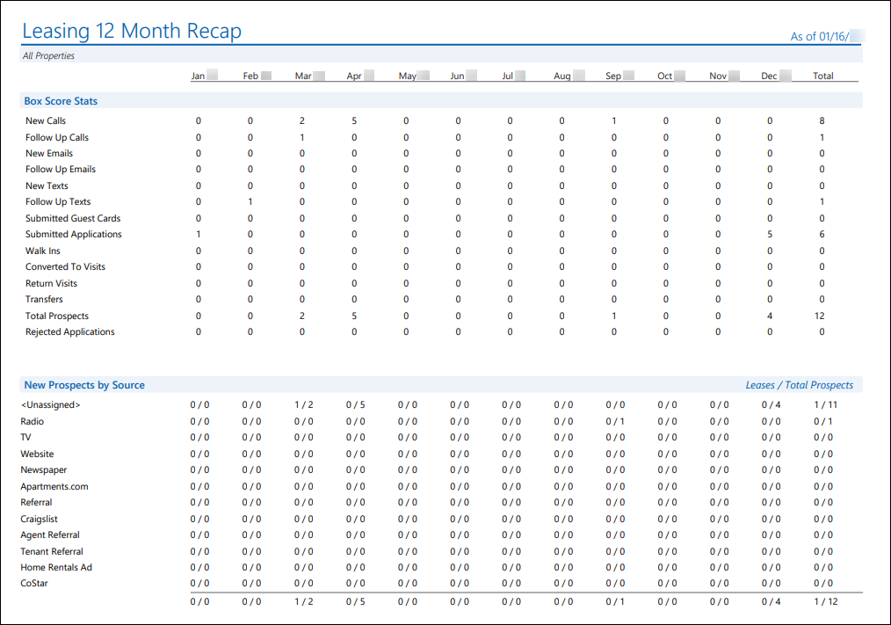
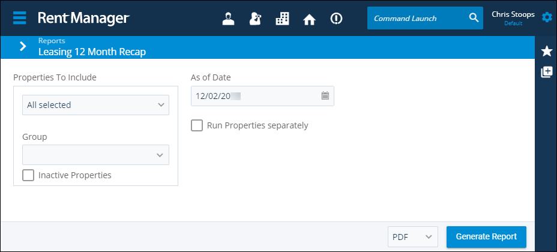
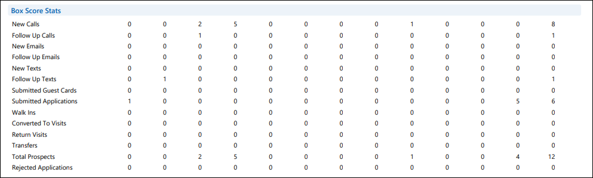
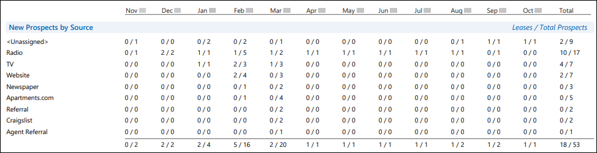
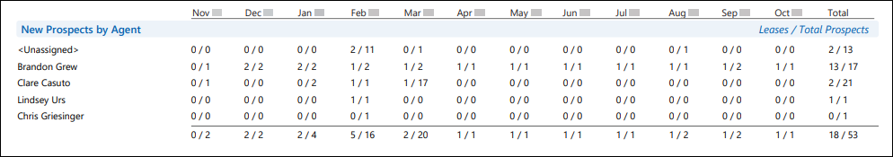

Source: https://rmxhelp.rentmanager.com/Topics/Express/Other/Reports/Leasing-12-Month-Recap.htm
Leasing 12 Month Recap (Report)
The Leasing 12 Month Recap report provides information about the prospect management and leasing practices and trends of your business on a month-to-month basis. The report is used for tracking close rates, the performance of leasing agents, and the efficiency of marketing campaigns for the twelve months prior to the report date.
Related Privileges
| Group | Privilege | Column |
|---|---|---|
| Letter/Email Templates/Reports/Packets | Run reports | Enabled |
Additionally, on the Reports tab, you must have access to Leasing 12 Month Recap.
For more information, refer to Control User Access.
To view the Leasing 12 Month Recap report, do the following:
-
Go to
 arrow_forward Rental Info arrow_forward Prospects arrow_forward Leasing 12 Month Recap.
arrow_forward Rental Info arrow_forward Prospects arrow_forward Leasing 12 Month Recap.
The Reports: Leasing 12 Month Recap page displays. -
Adjust the report options as desired. Each option is described below.
-
Generate the report in your desired file format(s).
Related Preferences
Reports may look different depending on whether or not the Use modernized report style system preference is enabled. For more information, refer to General Report Options (System Preferences).

Report Options
The report options described below determine what data displays in the report.

Properties to Include
Select each property or a property Group to be included in the report.
More Information
This field populates only with the properties to which you have access. Your access to properties can be managed from your user account or on the property's details page. For more information, refer to Limit Access to a Property.
Optionally, check Show Inactive Properties to include properties that are no longer active.
As of Date
Rent Manager examines relevant report information as of (up through) the date entered to determine the data that displays in the report.
Run Properties Separately
Check to generate a separate report for each selected property. Otherwise, all selected properties are combined into a single report.
Report Results
The report results are described below including, if applicable, section, column, and subreport descriptions.
Report Header
The report header displays the report name and key information selected in the report options, such as date information and which properties were examined in the report.
Box Score Stats
The Box Score Stats section displays information about various ways that contact was made with prospects, and the number of prospects that used those methods to contact your business.

The following rows display in the section:
| Row | Description |
|---|---|
|
New Calls |
The number of prospects who made first contact with your business during each month via phone call. In order to be counted, the prospect must have a Call history/note listed as the earliest history item on the prospect's History/Notes tile of their account, or a call that is received through rmVoIP from a phone number linked to that prospect's account. |
|
Follow Up Calls |
The number of additional calls made to prospects during each month. In order to be counted, the Spoke with Prospect option on the Call history/note must be checked, or a call is received through rmVoIP from a phone number linked to that prospect's account. Related Preferences You can make the Spoke with Prospect option always checked by enabling the Enable "Spoke with prospect" on new calls by default option in system preferences. For more information, refer to Prospect (System Preferences). |
|
New Emails |
The number of prospects who made first contact with your business during each month via email. In order to be counted, the prospect must have an Email history/note listed as the earliest history item on their History/Notes tile. |
|
Follow Up Emails |
The number of additional emails sent to prospects during each month. This value increases each time a new Email record is added to the History/Notes tile of a prospect. |
|
New Texts |
The number of prospects who made first contact with your business during each month via text message. In order to be counted, the text must be received or sent using the Text Messaging Center. |
|
Follow Up Texts |
The number of additional text messages sent to the prospects during each month. This value increases each time a new text message is received or sent using the Text Messaging Center. |
|
Submitted Guest Cards |
The number of prospects who made first contact with your business during each month via a guest card. In order to be counted, the prospect must be created through the submission of a guest card from your website. |
|
Submitted Applications |
The number of prospects who made original contact by submitting an application using Apply Now during each month. In order to be counted, the application must be completed and submitted. Applications that a prospect starts but does not submit are not counted. |
|
Walk Ins |
The number of prospects who made first contact with your business during each month via an in-person visit. In order to be counted, the prospect must have a Visit history/note listed as the earliest history item on their History/Notes tile. |
|
Converted To Visits |
The number of prospects who originally contacted you during each month by phone call, email, text, or by submitting an application who then later made an in-person visit. Prospects with an original contact a Visit history/note do not increase the total of this column even if they later come back for another visit. |
|
Return Visits |
The number of return visits that prospects made during each month. All future visits after the first one are tracked as Return Visits. |
|
Transfers |
The number of prospect created via the Transfer a Tenant wizard for each month. For more information, refer to Tenant Transfer Wizard. |
|
Total Prospects |
The total number of new prospect accounts created in Rent Manager for each month. |
|
Rejected Applications |
The number of prospects who submitted an application through Apply Now and later had their Status changed to Lost-Rejected for each month. This value displays in the month that the application was submitted, not the month in which the prospect was rejected. |
New Prospects by Source
The New Prospects by Source section displays how many prospects responded to each of your marketing strategies, and how many of those prospects were converted into tenants for each of your lead sources. For more information, refer to Prospect Lead Sources (Page).

Each of your lead sources display as a row in this section. Each month's entry displays in a Leases/Total Prospects format. The first number represents the number of prospects who cited the lead source and that were converted to tenants during each month. The second number represents the total number of new prospects who cited the lead source during each month.
Prospects with no Lead Source selected on the prospect's details page are counted in the <Unassigned> row.
New Prospects by Agent
The New Prospects by Agent section displays how many prospects are assigned to each of your leasing agents, and how many of those prospects were converted into tenants.

Each of your leasing agents (Rent Manager users with Sales Rep/Leasing Agent checked on the user's details page) displays on a row in this section. Each month's entry displays in a Leases/Total Prospects format. The first number represents the number of prospects assigned to the leasing agent and that were converted to tenants during each month. The second number represents the total number of new prospects who were assigned to the leasing agent during each month.
Prospects with no Leasing Agent selected on the prospect's details page are counted in the <Unassigned> row.